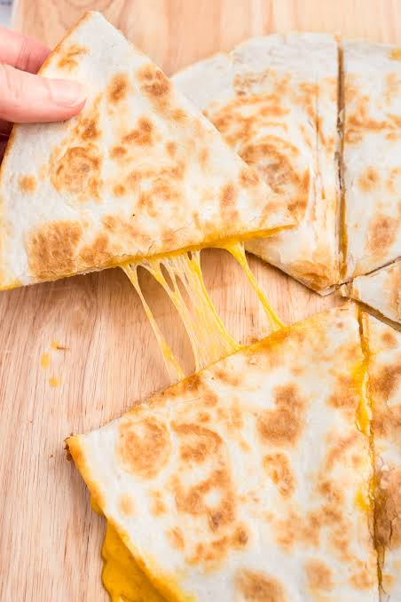

Home
Cheese Quesadilla

Description:
A cheese quesadilla is a wonderful snack or meal when paired with some protien and fiber. All you need is a tortilla and any cheese you desire (shredded is best).
In my childhood, we always had shredded cheese and tortillas around so it became one of my favorite snacks. You can make this recipe on the stovetop or in the microwave in a rush.
Ingredients:
- 1 tortilla
- 1 handful shredded cheese
- 1 tbsp oil
Directions:
- Gather ingredients
- Place a 10-inch cast iron skillet onto the stove and turn on stove to medium-high.
- Heat up the tortilla, flipping frequently until warmed throughout.
- Add shredded cheese to one half of the tortilla, fold in half and press with a spatula.
- Cook on each side until at least golden brown but until whatever level of browning you'd prefer.
- Enjoy!